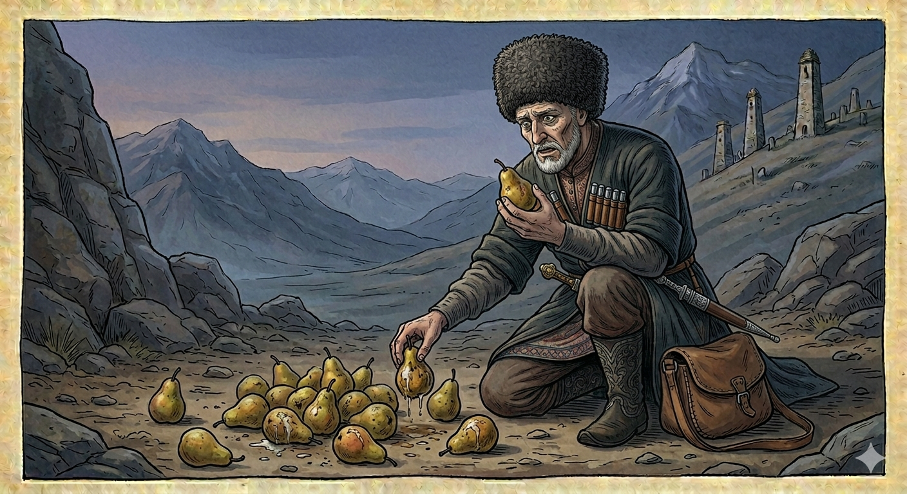

И.А. Дахкильгов. Хьехаме дувцарш - поучительные рассказы-притчи.
И.А. Дахкильгов. Хьехаме дувцарш - поучительные рассказы-притчи. Из ингушского фольклора.

Укхох кхийттаяц…
Цхьан юртара кхыча юрта водаш хиннав цхьа къонах. ТӀорме чу кхораш хьош хиннаб цо, шийна наькъа баа. Иштта, кхораш буо-ош ах никъ баьча гӀолла визав из царех. Ер мухь сенна текхабу аз, аьнна, кхораш Ӏокхайсаб къонахчо, тӀаккха царна тӀа меражи тугаши техад цо, кхычарна уж кхораш дӀакхачар ца дезаш. Кхача везача дӀа а кхаьча, ший гӀулакх даь а ваьнна, ший наькъагӀа юхавоагӀаш чӀоагӀа мецвеннав из къонах. Циггач бӀаргабейнаб цунна ше дӀакхесса а бӀехбаь а ухка кхораш. Моцалах кер хьувзаш воа ер кхораш гулбе волавеннав. Ше хӀара кхор хьа массаза эца, оалаш хиннад цо: - Укхох тугаш кхийттадац, укхох мераж кхийттаяц…
РУССКИЙ
На нее не попало…
Некий мужчина шел из одного села в другое. Нес он в сумке груши, чтобы съесть их в дороге. Идет он и ест груши. Прошел он половину пути, насытился и подумал: "Зачем мне тащить этот груз?" Взял он и вывалил груши на землю. Затем он оплевал их и высморкался на них, потому что не хотел, чтобы этими грушами кто-нибудь питался. Дошел он, куда ему надо было, завершил там свои дела и идет назад по той же дороге. Пройдя половину пути, он очень проголодался. Тут он увидел груши, которые были им брошены и загажены. От голода у него ныло нутро, и он начал собирать груши. Берет он по одной груше и приговаривает: "Вот на эту плевок не попал…"
ENGLISH
It didn't hit it…
A man was walking from one village to another. He was carrying a bag of pears to eat on the way. He walked along, eating the pears. Halfway there, he had had his fill and thought, 'Why should I carry this burden?' So he took the pears and dumped them on the ground. Then he spat on them and blew his nose on them, because he didn't want anyone else to eat them. He reached his destination, finished his business there, and set off back along the same road. Halfway back, he became very hungry. Then he saw the pears he'd thrown away and soiled. His stomach was growling with hunger, so he began to gather up the pears. He picked up one pear at a time, muttering: 'At least this one wasn't spat on…'
НОХЧИЙН
ПОГОВОРКИ
Гуйре йиза хул, бӀаьсти меца хул. - Осень сыта, а весна голодна.Ди дийкха дар, аьнна, кхоллар доацаш ма гӀо; виза вар, аьнна, кхача боацаш ма гӀо. - В дальнюю дорогу бери, чем накрыться, хотя бы и было солнечно, возьми припасы, хотя бы ты и сыт был.Дикачох Ӏеха а ма ле, вонах велха а ма велха. - Не обманывайся, когда придет хорошее, и не огорчайся, когда придет плохое.ДӀаводаш Ӏа тоабаь никъ юхавогӀаш накъабаьннаб. - Если ты ехал по дороге и заодно чинил ее, дорога эта сгодится тебе на обратном пути.Йиаь вахар яанза вахачул теннав. - Кто поел и пошел в путь, тот обошел того, кто вышел в путь натощак.Саго дӀа-хьа вахачара дош дахь, жӀале дӀа-са лелачара тӀехк яхь. - Человек из своих странствий привозит ум, а бродячая собака – кость.Уйла йий мара ара ма вала. - Не отправляйся в путь, не обдумав предстоящее.Урхе йоаккхачоа ха деза мухале яьккха езаргйолга. - Идущий в гору должен знать, что ему еще предстоит спуститься под гору.Урхе йоаккхачо мара яьккхаяц мухале. - Спуск одолевает лишь тот, кто одолел подъем.Хьаст цӀена лоаттабечо цӀена хий мел. - Кто содержит в чистоте родник, тот пьет чистую воду.Хьачах хьадж яьккха, кхор кхозза кхалла, Ӏажа кхачанна эца. - Сливу понюхай, грушу откуси три раза, а яблоко возьми в дорогу.Яхь хила мегаргья, хьагӀ хила мегаргьяц. - Похвально стремление быть лучше других, но нельзя таить черную зависть к другим.